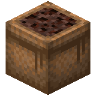

About
Green onion seeds are items that can be obtained from breaking wild green onions, or more abundantly harvested from green onion crops, and are used to plant them.
Green onion crops are planted in farmland and used to grow green onions and green onion seeds.
The green onion seeds crate is a decorative block that can be used to store green onion seeds.
Obtaining
First Source
Green onion seeds are first obtained from breaking wild green onions. These plants spawn in flower forest biomes. Visit the wild green onion page to read more about it.
Farming
Fully grown green onion crops drop 1 green onion and 1 to 4 green onion seeds per harvest. Harvesting with a Fortune-enchanted tool increases the number of seeds dropped but does not increase the yield of green onions.
Usage
Planting
Green onion seeds can be planted on the following blocks:
Any blocks added to the minecraft:supports_crops tag are also supported.
Crafting

Craft a green onion seeds bag by filling the crafting table with nine green onion seeds.
Craft nine green onion seeds from a green onion seeds bag by placing it in a crafting table in any arrangement.
Technical
Configuration
Toggles the world generation and availability of wild green onions, green onion crops, green onion seeds, green onion seeds bag, and wild green onions.
- In-Game Screen Name: Enable Green Onions
-
Config File Key:
enable_green_onionstrue/Yes: Enabled (Default)false/No: Disabled and hidden
Green Onion Seeds

| Renewable | Yes (Green Onion Crops) |
| Stackable | Yes (64) |
| Tool | Any tool |
| Blast Resistance | 0 |
| Hardness | 0 |
| Luminous | No |
| Transparent | Yes |
| Catches fire from lava | No |
| Push reaction | Destroy |

| Renewable | Yes (Crafting) |
| Stackable | Yes (64) |
| Tool | Any tool |
| Blast Resistance | 0.8 |
| Hardness | 0.8 |
| Luminous | No |
| Transparent | No |
| Flammable | Yes |
| Catches fire from lava | Yes |
| Note block instrument | Guitar |
| Sulfur cube archetype | Fast Flat |